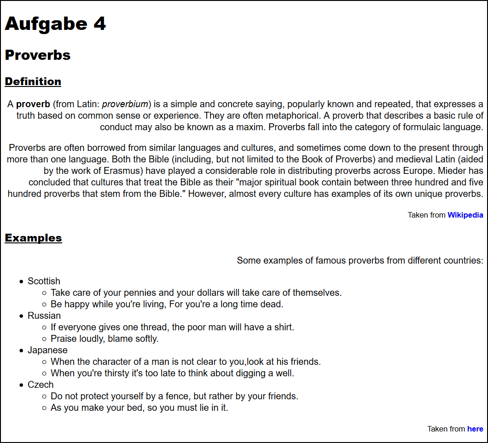

Task 42
Open the page
../solutions/task42.html
and adjust the CSS style according to the following criteria.
Use again the method of the Internal Style Sheet.
-
The text of all paragraphs should be aligned to the right margin.
-
The text of all hyperlinks should be bold but not underlined.
-
The headings on the third level should be underlined.
-
Inform yourself first
here
how to specify fonts. Then adjust the fonts:
-
Use the font Arial for the whole page.
-
All headings should use the font Arial Black.

Solution of Task 42